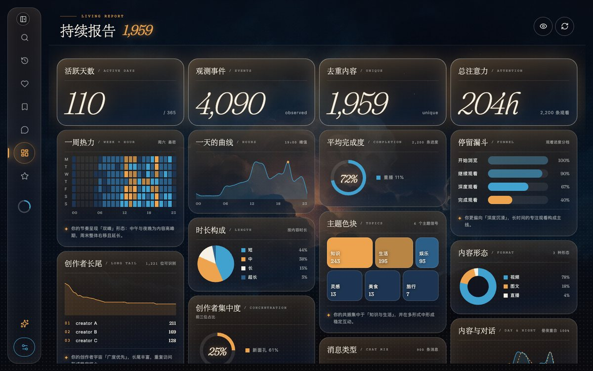

DouyinDataReview
抖音数据导出与年度报告工作台。把你的抖音数据，留在自己的电脑上。
下载桌面版
版本与校验值以 GitHub 最新发布为准。
DouyinDataReview 能做什么？
DouyinDataReview 是免费开源的抖音数据导出与年度报告桌面应用，支持 Windows x64 和 macOS Apple Silicon。它保存本人账号可访问的观看历史、喜欢、收藏和好友聊天记录，可选择导出为 JSON，并在本机生成抖音年度回顾（Douyin Wrapped）。
- 项目性质
- 独立开发的非官方开源工具，与抖音及字节跳动无隶属、授权或合作关系。
- 支持平台
- Windows 10 / 11 x64；macOS Apple Silicon（M1 及更新）；界面语言为中文。
- 数据来源
- 本人账号可访问的抖音接口、本应用备份，或抖音官方个人信息下载档案；面向抖音（Douyin），不支持国际版 TikTok。
- 导出与报告
- 记录按勾选项导出 JSON，聊天默认不勾选；年度报告可导出独立 HTML 和 1080 × 1440 PNG。
- 费用与许可
- 应用免费，源码采用 MIT 许可；本地统计与年度报告不需要 AI 服务。
- 本地与联网
- 记录保存和报告统计在本机完成；在线采集需要联网及有效登录凭据；应用本身不调用 AI 服务。
- 读取并保存抖音观看历史、喜欢和收藏，关掉窗口后留在托盘里定时补读
- 实时接收和回复抖音聊天，有续火花看板，能一键给勾选的人续火花
- 在工作台里看自己创作者中心的数据总览、作品数据、粉丝画像和评论分析，只读
- 内容库按标题、作者、话题搜索，视频能在应用里播放或下载到本地
- 按勾选项导出 JSON 备份，换电脑可导入；也可导入抖音官方 JSON / ZIP 档案
- 生成年度报告和持续报告，年度回顾可导出独立 HTML 与 PNG 分享图
- 桌面版一键把视频送去独立应用拆片工坊（ReelLab）做 AI 解析与剪辑
具体操作见数据导出步骤、年度报告指南与数据去向说明。在线采集不保证取回全部历史，群聊正文不写入备份。
安装与首次登录
桌面版自带采集器，在首屏用抖音 App 扫码、核对账号并确认导入即可读取，不需要另外安装浏览器或扩展。分别勾选要读取的视频记录和聊天，首次默认只勾选视频。源码运行和浏览器导入方式见README 快速开始。
macOS：打开 dmg，把「DouyinDataReview」拖进「应用程序」。安装包没有开发者签名，第一次打开前先在「终端」里运行下面这行，不然会提示“应用已损坏”：
xattr -cr "/Applications/DouyinDataReview.app"
Mac 版没法在应用里自动更新，出新版本时回到这里重新下载，覆盖安装就行，已经采集的数据不会丢。旧版名为「内容数据工作台」，替换时移除旧应用即可，本地数据目录继续沿用。
Windows：运行安装程序。如果弹出 SmartScreen 提示，先点「更多信息」，再点「仍要运行」。以后的新版本可以在应用里直接更新。
核对安装包是否完整（SHA-256）
加速线路由第三方转发。担心文件被改过的话，可以对照下面的校验值：macOS 在终端运行 shasum -a 256 文件名，Windows 在 PowerShell 运行 Get-FileHash 文件名。
暂时拿不到校验值，请到 GitHub 发布页查看。
抖音年度报告示例
不用安装，可以先在浏览器里翻一份示例年度报告，三种风格任选：内容年志 · 档案馆 · 海报。里面是编出来的演示数据，不是谁的真实记录。报告按电脑屏幕设计，手机上打开会挤在一起。

常见问题
DouyinDataReview 是什么？适合谁用？
DouyinDataReview 是免费开源的抖音数据导出与分析桌面应用，适合备份本人抖音观看历史、喜欢、收藏和好友聊天记录，整理内容库、查看创作者数据，以及制作个人年度回顾。它是独立开发的非官方工具，面向抖音（Douyin），不支持国际版 TikTok。
怎么导出抖音观看历史和聊天记录？
安装桌面版，在首屏用抖音 App 扫码，核对账号并勾选「读取视频」和／或「读取聊天」后确认导入。读取完成后，在「设置 → 数据」点「导出数据」，勾选需要的观看历史、喜欢、收藏或聊天，保存为 JSON。聊天默认不勾选，导出本身不会触发平台读取；聊天备份含已保存的好友消息及会话信息，不含群聊正文。
能导出全部抖音历史记录吗？
不能保证。DouyinDataReview 只能读取抖音接口当前返回且本人账号有权访问的记录，无法恢复接口已经不提供的数据。年度报告只反映已保存记录及其日期和字段；持续采集可以积累记录，也可导入抖音官方个人信息下载档案补充分析。
抖音官方「个人信息下载」的档案能直接用吗？
能。在采集器页「或者导入个人档案」处点「选择文件」，选择官方导出的 JSON 或 ZIP，可不登录抖音生成报告。可用统计取决于档案实际包含的字段和日期；该导入仅在本次打开期间使用，关闭应用后需重新导入。
需要安装浏览器扩展或一直开着浏览器吗？
不需要扩展。桌面版可在首屏扫码登录并导入凭据，无需另外配置浏览器。从源码运行时，可通过 Chrome 144+、带远程调试开关的 Edge 或 macOS Comet 导入本人登录凭据。导入成功后自动断开；凭据有效时可关闭浏览器继续采集，失效或需要验证时重新登录并导入。
有没有像 Spotify Wrapped 那样的抖音年度报告？
有。DouyinDataReview 用本机保存的观看、喜欢、收藏和聊天记录生成抖音年度回顾（Douyin Wrapped），提供内容年志、档案馆和海报三种风格，可导出独立 HTML 与 1080 × 1440 的 PNG 分享图。报告不需要 AI 接口，数据不全时也不会补造缺失记录。此页的示例报告使用合成数据，可免安装预览。
能批量下载抖音里喜欢和收藏的视频吗？
能。内容库点「批量下载」进入多选，选中的视频会打包成 ZIP 保存到本机；图文作品会下载全部图片。探索页的用户主页也支持下载作品。在线下载需要网络、有效会话，以及当前账号可访问的作品。
收费吗？数据会传到哪里？
应用免费、源码采用 MIT 许可。个人记录保存和报告统计在本机完成；在线采集只请求抖音，应用本身不调用 AI 服务。AI 视频解析与剪辑已拆成独立应用拆片工坊（ReelLab）：只有你在桌面版点「送去」按钮送到拆片工坊的那条视频（文件和标题、作者、链接、时长）会复制给它，之后的数据流由拆片工坊自己说明。抖音 Cookie 和整份个人记录不会交给它。
会被封号吗？
没法保证不会。工具使用本人账号导入的会话，但采集依赖抖音未公开承诺的私有接口，接口变化可能导致功能失效或触发账号风控。请仅用于本人账号和个人数据管理；发送消息、点赞和评论等操作由用户主动触发。
支持哪些系统？能在手机或 Intel Mac 上安装吗？
已提供的桌面安装包支持 Windows 10 / 11 x64 和 macOS Apple Silicon（M1 及更新）。目前没有原生手机安装包、Intel Mac 安装包或 Linux 安装包。开发者可从源码运行 Web 工作台；手机在可信局域网连接电脑采集器的方式见仓库 README。
In English
DouyinDataReview is a free, MIT-licensed desktop app for Windows x64 and macOS Apple Silicon. Export your own Douyin watch history, likes, favorites and saved friend chats as JSON, import an official Douyin JSON / ZIP archive, and generate a local year-in-review (Douyin Wrapped) as HTML or PNG. Group chat bodies are excluded from backups, and a complete lifetime history is not guaranteed. It targets Douyin in China; international TikTok is not supported. The interface is in Chinese. AI video analysis and editing now live in a separate app, ReelLab; the desktop app can send a video there in one click. See the data flow guide.
交流与反馈

QQ 群 DDDouyin，群号 1124211302
也可以直接加 QQ 940537208